all transients in sector25 (57 total)
Each figure has three panels. The top panel shows the transient light curve, the middle panel shows the local background (estimated in an annulus), and the bottom panel shows a "background-model corrected" light curve. Details about the background model are in the README.
The vertical red line marks the time of discovery reported to TNS. Other useful metadata from TNS is in the figure title.
Note that the top and bottom panel are in magnitudes, while the middle panel is in differential flux units. The magnitudes are calibrated to the flux in the reference image used for image subtraction. Thus, flux from the host galaxy is included in these magnitudes.
3-sigma upper limits are plotted as triangles with no errorbars. A typical limiting magnitude is 19.6 in 30 minutes or 18.4 in 200 seconds (for low backgrounds).
The links allow you to download the light curve data as a text file.
More details in the README.
2020lao
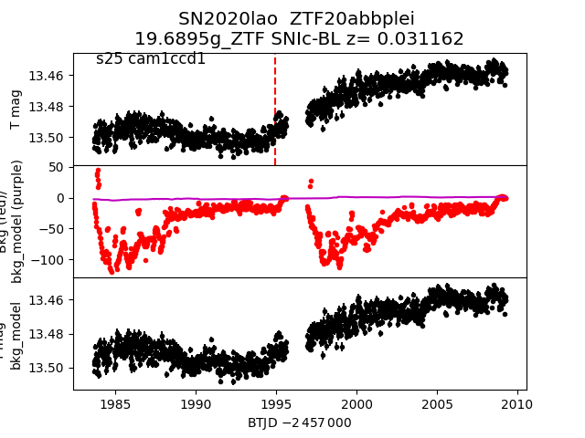
2020lls
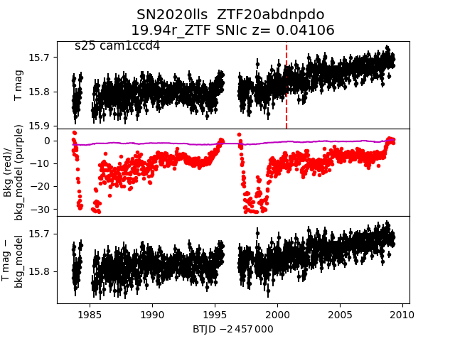
2020kbq_detrended
2020lmv
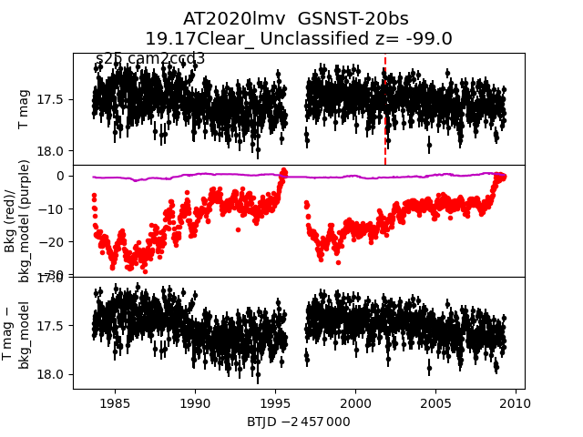
2020maw
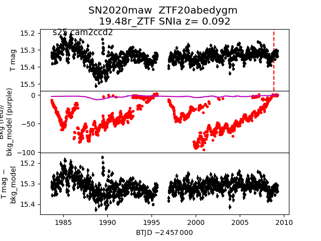
2020lit
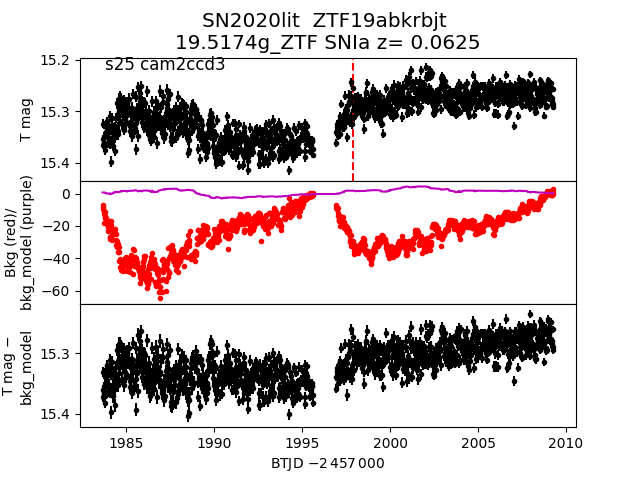
2020kxc
2020kss
2020kcw
2020lnq
2020kzr
2020lli
2020kte
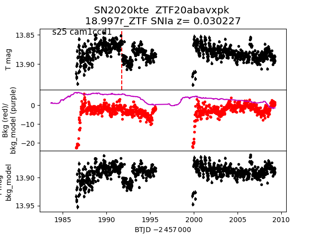
2020kda
2020kbq
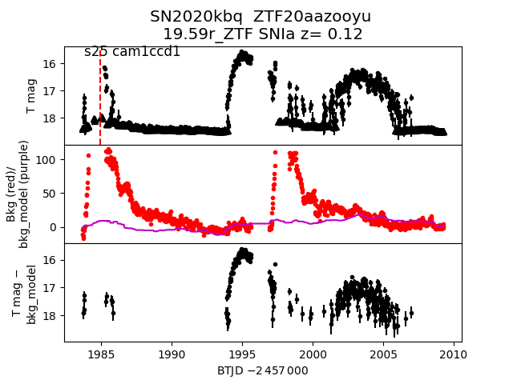
2020lir
2020mes
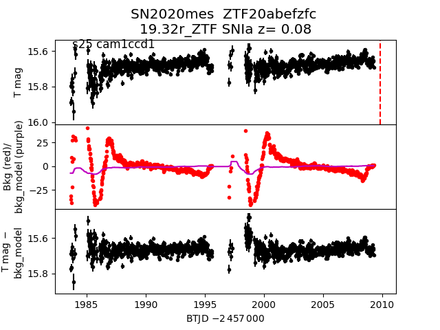
2020mic
2020jxq
 2020maq
2020lqd
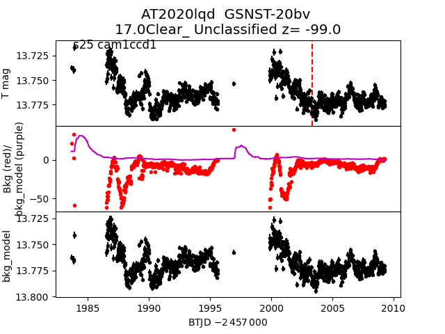
2020lsp
2020kyi
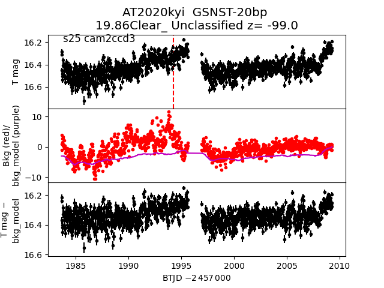
2020mce
2020maq
2020lqd
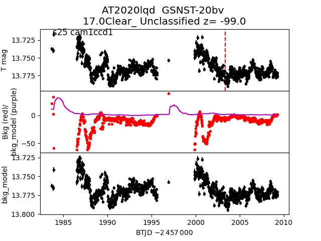
2020lsp
2020kyi
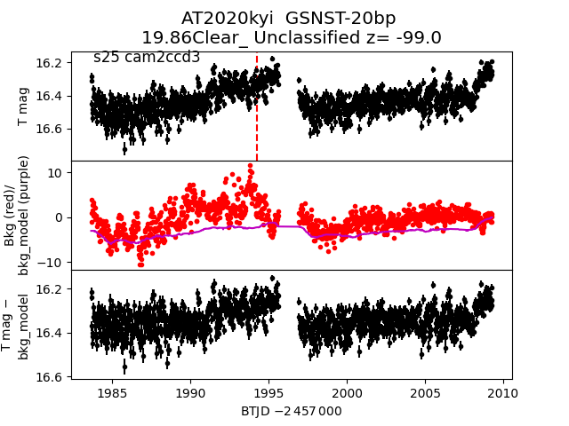
2020mce
 2020lkf
2020kbb
2020lmu
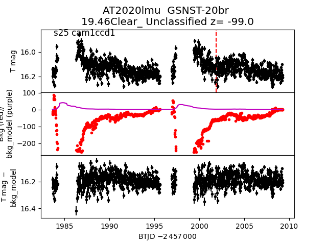
2020kmy
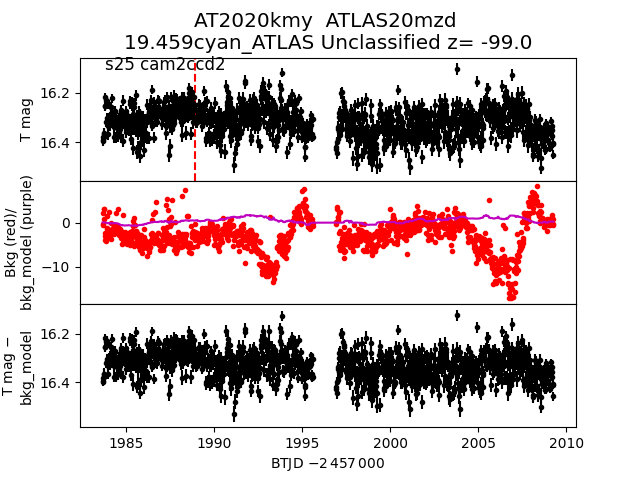
2020ktc
2020kav
2020ltf
2020kbs
2020liy
2020kbl
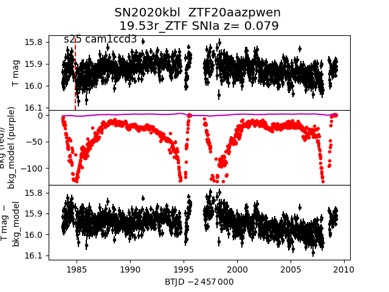
2020lfk
2020jww
2020lkf
2020kbb
2020lmu
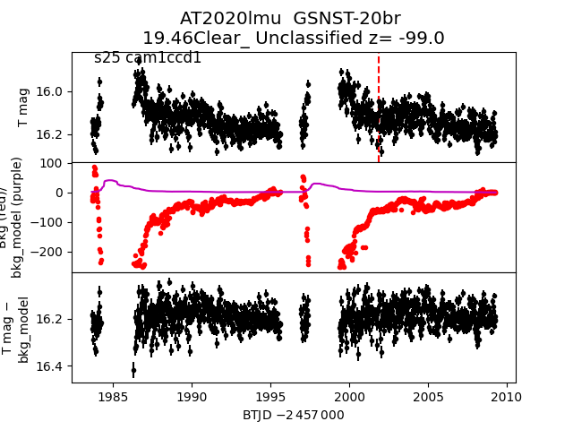
2020kmy
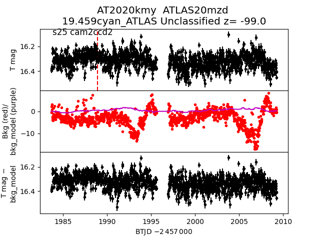
2020ktc
2020kav
2020ltf
2020kbs
2020liy
2020kbl
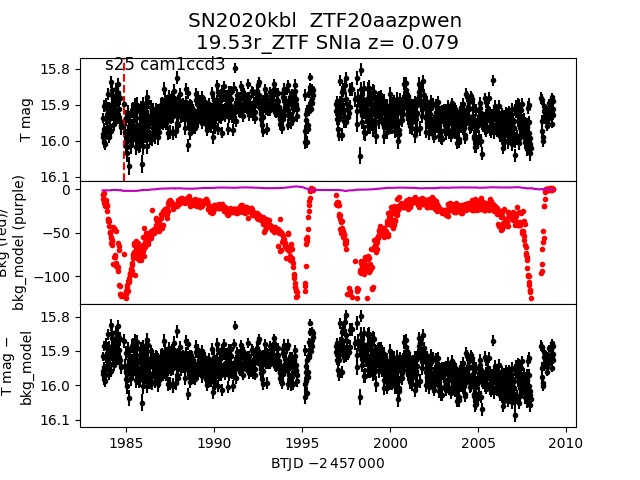
2020lfk
2020jww
 2020meq
2020kzs
2020meq
2020kzs
 2020lee
2020kur
2020knf
2020klw
2020lqj
2020lqi
2020lpz
2020kvs
2020lee
2020kur
2020knf
2020klw
2020lqj
2020lqi
2020lpz
2020kvs
 2020kbu
2020klk
2020lmb
2020kbu
2020klk
2020lmb
 2020llg
2020lkg
2020kzp
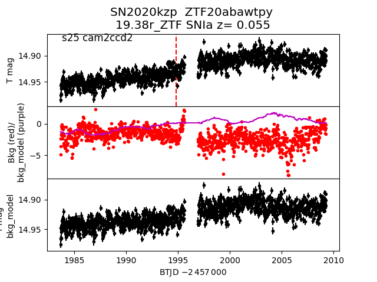
2020klq
2020kbo
2020ksx
2020lfw
2020kbp
2020llg
2020lkg
2020kzp
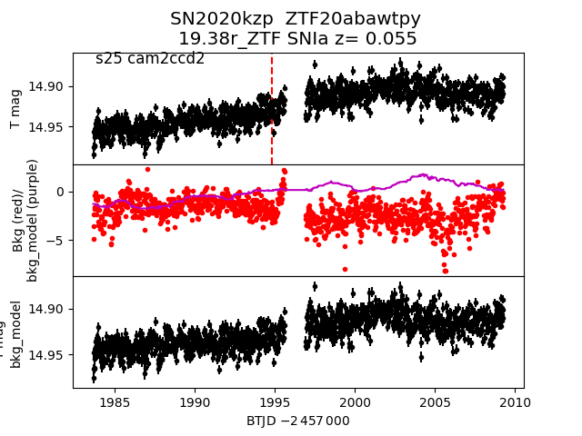
2020klq
2020kbo
2020ksx
2020lfw
2020kbp